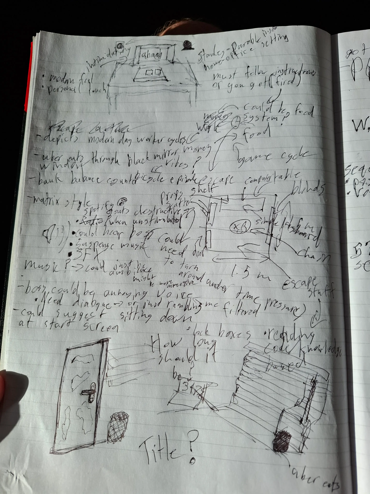

Project Overview
This project was my focus for a VR development course I did in university. I was given a generously broad prompt of making an 'escape room game' in VR. So naturally I went to my sketchbook to brain storm and get an idea of what I was going to do.

Brainstorming
I wanted to add an innovative twist onto the traditional escape room experience, for this I had the idea of having to manage a seperate game mechanic as you play, (similar to Five Nights at Freddys 2 and its music box mechanic). I also had the idea of a currency system; earning money as you do jobs, which would then allow you to order food.
For the puzzles, I set out to make them fairly simple and high volume, due to the stress I was aiming to invoke in the player, since puzzles tend to scale in difficulty as the player becomes more stressed (Yerkes-Dodson law!). A few I'll mention are the keypad puzzle where you need to move props around and find a code, which then can only be inputted with a pen in your pencil holder; and the usb puzzle where you find usbs around the room and put them into their respective slots.
There was something missing though, why does the player want to escape? What is the motivation? I then had the idea of an absurdly annoying manager on voice chat with you, which I think adds a great layer of comedy to the experience - Putting this all together, I had a vision for a high-stress, absurd escape room.

Development
As I started building, I quickly realised that the allotted timeframe was not enough for the current scope of the game, so I unfortunately had to pick up my scope hammer and take out the currency system. I was however, able to build some really cool features!
I learnt alot about the unity XR package and API as a whole, it was also a great intro to event based input handling. I made use of the 'socket' functionality for many of the puzzles I created, a beautifully simple yet effective tool for VR games. There was also a great debug tool which was simply called 'device simulator', which allowed me to test my game without whacking a headset on and off my head.
At this stage in my game-dev journey, I was at a stage of using free assets from artists on turbo squid, although I had a specific vision in mind for the keyboard. I wanted something that wouldnt have tiny keys, due to lack of fine motor control in XR devices; and I also wanted something easily understandable, something that could be used under stress, (one of my main game-design goals). So I made it myself! I ended up learning alot about 3D modelling and texturing. Then, as a bonus, it was exactly what I wanted!

Product and Reflections
The final product was a great prototype but lacked polish due to lack of playtesting. My main learning from this experience was the importance of playtesting and playtesting early. Although I had alot of fun modelling and programming this game, and I learnt alot. Onto the next!